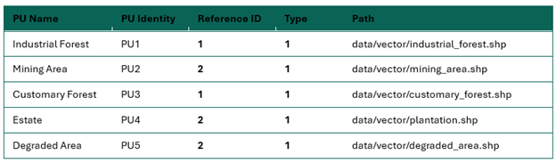
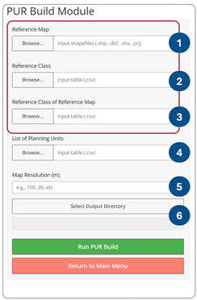
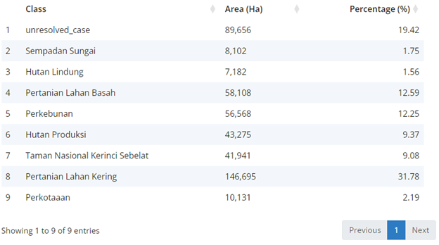
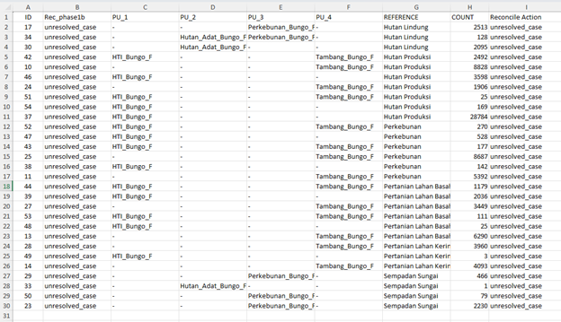

1 Planning Unit Reconciliation (Build)
1.1 Description
The Planning Unit Reconciliation (PUR) menu is used to build zoning or planning units to achieve sustainable and appropriate landscape management, both from a local, policy and scientific perspective. Moreover, this module can see the overlap of various land uses in a landscape. It helps the stakeholders to understand which area is overlapping and the size of the area.
1.2 Usage
1.2.1 Workflow
Users upload reference maps, select analysis parameters, and the module generates maps and statistics for each planning units.
1.2.2 Step-by step instructions
Step 1: Data Preparation
Before using the Pre-QuES Analysis tool, prepare the following:
Reference Map: shape files representing spatial plan
Reference class table: A CSV file describing class you wish to
Reference class of the reference map table: A CSV file describing values with their corresponding reference map classes.
List of Planning Unit Table: A CSV file contains ID of corresponding planning unit classes
Step 2: Uploading Data
Users upload reference map (upload the .shp, .dbf. .prj, and .shx files).
Select reference classification (csv), containing information about the land use function classification, ie. Conservation, plantation, others.
Select reference classification of the reference map (csv), contain information about the land use classification, ie. Protected forest, plantation forest, urban area, watershed.
Input the list of planning units (csv). The planning unit table should contain five columns: PU name, PU identity, Reference ID, Type, and Path. The table should look like this.

PU_name: planning unit name
PU_identity: identity of each planning unit, it can be filled with pu1, pu2, … pu-n.
Ref_ID :reference ID
Type: Users may input 0 (reconcile)/ 1 (additional).
- **Additional (Type=1):** The reference map and planning unit (e.g., permits) are considered to have equal status. As a result, any overlap between the two will be treated as "unresolved," regardless of the "reference class."
- **Reconcile (Type=0):** The 'Reconcile' option makes the reference map the primary benchmark. Any overlap between the planning unit and the basemap will only be marked as 'unresolved' if both have identical 'reference classes.'- path: original planning unit file contains default path, and this column should be modified to the local address of map files. To change the path (windows):
- select the map files in the file explorer and right click
- click ‘copy as path’ menu
- paste to the ‘path’ column
- change all the back slash () to slash (/)
- Set your desired map resolution.
- Select the output directory you wish to save your analysis. You can create new folder to put the analysis results anywhere in your computer.
- Once complete, click on ‘Run PUR Build’ to start the analysis. A progress bar will appear, indicating the analysis status.

1.2.3 Tips
While there is no rule of thumb, a higher input map resolution may require more time to compute and a lower input map resolution requires less time. Choose your preference.
Ensure that the directory path is correctly written in the planning unit look up table.
1.3 Data Requirements
1.3.1 Input Data and Parameters
| No | Data Name | Type | Format | Projection Requirements | Description |
| 1. | Reference map | Shapefile | .shp | UTM | A map land use type based on spatial planning |
| 2. | Reference class | Numerical | CSV | Determine reference classes. | |
| 3. | Reference class of reference map | Numerical | CSV | Classify/group each reference map class to its reference class | |
| 4. | Planning unit | Numerical | CSV | List of planning unit |
1.3.2 Example Datasets
Practice data sets used in this module can be accessed at agroforestri.id/lumens-pur
1.3.3 Data Acquistion
Land cover maps can often be obtained from global or official national data. For creating your own land cover maps from satellite imagery, consider using software such as Google Earth Engine, ArcGIS and R.
1.4 Outputs
1.4.1 Output Files
| File Name | Type | Description |
|---|---|---|
| PUR_build_report | html | A report summarizing the analysis results with visualisations and tables. |
| PUR_first_phase_result | GeoTIFF and shapefile | A map depicting the suitability of land use with permits and allocations. |
| PUR_unresolved_case | CSV | A table showing the area of land that is overlapped with no decision. |
| PUR-build_database and PUR_dbfinal | DBF and CSV | Table of all overlapping polygon results. |
1.4.2 Report Interpretation
This section presents the results of the PUR Build, focusing on the unresolved area. The total area of interest is 461,658 hectares. Of this, 80.58% (372,002 ha) was successfully reconciled, while 19.42% (89,656 ha) remained unresolved and requires further reconciliation action.
The PUR unresolved case table can help identify which planning units overlap with the reference map.

Unresolved cases cover an area of 89,656 ha (19.42%). The specific area of each unresolved case can be seen in the csv file (PUR_unresolved_case.csv)

ID represents one of the overlapping areas, that can be more than two classes. …
1.5 Theoretical Background
1.5.1 Model Description
The PUR module helps identify the location and extent of various overlapping area designations. These results can then be used as a basis for more open and directed discussions in the process of updating planning units.